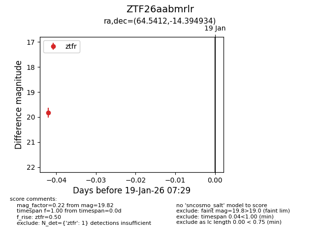
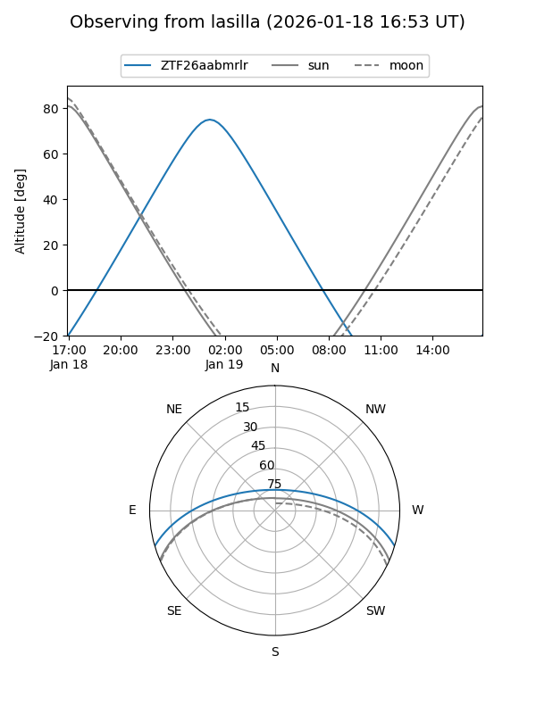
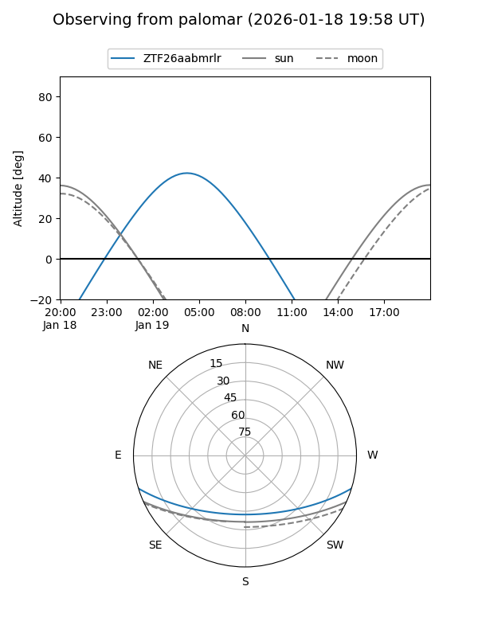

ZTF26aabmrlr
Target ZTF26aabmrlr at 2026-01-19 07:31
Aliases and brokers:
FINK: link
Lasair: link
ALeRCE: link
alt names
ZTF26aabmrlr (ztf,fink_ztf)
Coordinates:
equatorial (ra, dec) = 64.5412,-14.39493
equatorial (HMS+DMS) = 04:18:09.89,-14:23:41.76
galactic (l, b) = (208.9731,-40.37997)
Flags:
Photometry:
last ztfr=19.82
1 ztfr detections
Lightcurve

Visibility


Additional plots